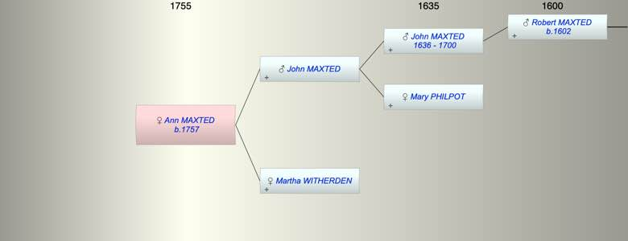

| [Index] |
| Ann Moses MAXTED (1757 - ) |
|  |
| b. 1757 at Northbourne |
| Parents: |
| John MAXTED |
| Martha WITHERDEN |
| Events in Ann Moses MAXTED (1757 - )'s life | |||||
| Date | Age | Event | Place | Notes | Src |
| 1757 | Ann Moses MAXTED was born | Northbourne | Note 1 | ||
| Note 1: bap 12 Mar 1757 Northbourne dau of John and Martha ex FS |
| Created on a Mac™ using iFamily for Mac™ on 8 Oct 2023 |